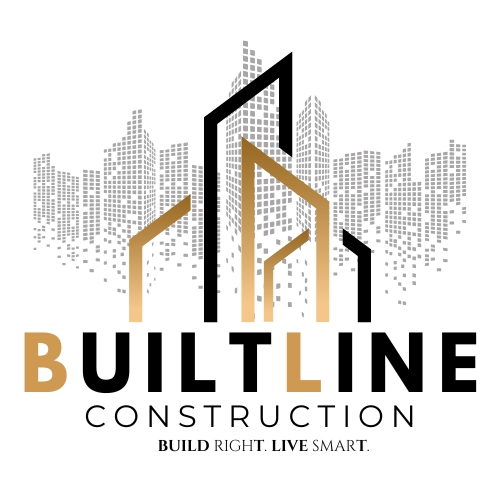

Choosing the Right Builder in Bangalore (2026)
How to Choose the Right Builder in Bangalore: The 2026 Homeowner’s Checklist
In the rapidly expanding landscape of Bangalore from the bustling tech hubs of Whitefield to the serene, heritage-filled streets of Malleshwaram, finding a reliable builder is a challenge. With the 2026 construction market seeing a surge in new players, homeowners must distinguish between marketing promises and actual engineering excellence. Choosing the right builder in Bangalore involves more than just comparing the cost per sq. ft. it requires a deep dive into legal compliance, structural integrity, and past performance.
Our expert team ensures structural excellence by managing every detail, from precise house foundation details and a rigorous excavation process to high-quality block work, guaranteeing a durable and stable home for every client
Verify RERA and Legal Credentials
In 2026, the K-RERA (Karnataka Real Estate Regulatory Authority) portal is your primary tool for verification. Even for independent houses in Malleshwaram reputable builders register their projects to ensure transparency.
- Check the RERA Number: Always verify the project's unique ID on the official portal.
- Trade Licenses & Insurance:Ensure the company has valid GST registration, labor insurance, and a track record of obtaining Occupancy Certificates (OC) without legal hurdles.
Assess "Local" Expertise in Malleshwaram
A builder who excels in large-scale apartments in North Bangalore might struggle with a 30x40 plot in Malleshwaram. The importance of local builders lies in their:
- Logistics Management: Experience in navigating narrow roads for material delivery.
- Neighborhood Relations:Extending columns from the base to support the structureKnowledge of how to build in dense areas without causing structural issues for shared-wall neighbors.
- Ward-Level Approvals:Familiarity with the specific Malleshwaram BBMP ward office requirements.
Analyze the BOQ (Bill of Quantities)
Avoid builders who give "lump sum" quotes. The right builder in Bangalore will provide a transparent, itemized BOQ that specifies:
- Material Brands: Exact brands for cement, steel (TMT bars), and electrical wiring.
- Exclusions: Clearly stated items like compound walls, BESCOM deposits, or BWSSB connections.
- Payment Milestones: A schedule linked to physical progress (e.g., Slab casting, Plastering) rather than calendar dates.
Visit Ongoing and Completed Sites
Digital portfolios can be misleading. To truly evaluate a construction company in Bangalore construction company in Bangalore, you must visit:
- Completed Projects (3-5 years old): Look for signs of water seepage, cracks in the plaster, or plumbing issues.
- Live Sites: Applying internal and external plaster to protect against Bangalore's monsoon.Live Sites
Frequently Asked Questions (FAQs)
Is a turnkey builder better than a labor contractor in Bangalore?
For most homeowners, turnkey construction is safer as it offers a single point of accountability for design, approvals, and execution, reducing the risk of coordination errors.
How do I check if a builder in Malleshwaram is reliable?
Ask for at least three references of completed projects within a 2km radius of Malleshwaram. Visit those homes and speak directly to the owners about the builder's post-construction support.
Should I pay the builder the full amount upfront?
Never. Standard practice in Bangalore is an initial booking fee (5-10%), with the remaining payments divided into 8-10 milestones based on construction stages.
Expert Construction Insights
In-depth guides and professional tips for your building journey in Bangalore.
How to Choose a Construction Company in Malleshwaram
Step-by-Step Residential Construction Process in Bangalore
Budget-Friendly House Construction Tips for Homeowners
Choosing the Right Builder in Bangalore: A Professional View
Top Turnkey Construction Company Solutions in Bangalore
G+1 House Construction in Bangalore
Modern G+2 House Construction in Bangalore
Modern Home Design Trends shaping Bangalore in 2026
Top Qualities to Look for in a Construction company
Expert 30x40 House Construction in Bangalore: Costs, Designs
Complete Checklist Before Starting Construction in Bangalore
Independent House Construction in Malleshwaram – Must Knows
Our Construction Service Areas
Find **Builtline Construction** projects in your neighborhood
Don’t Choose the Wrong Builder—Get a Professional Audit!
Unsure about a quote you've received? Our experts provide a Free Second Opinion on construction estimates and builder portfolios in Malleshwaram. Let us help you verify the technical and legal health of your project.